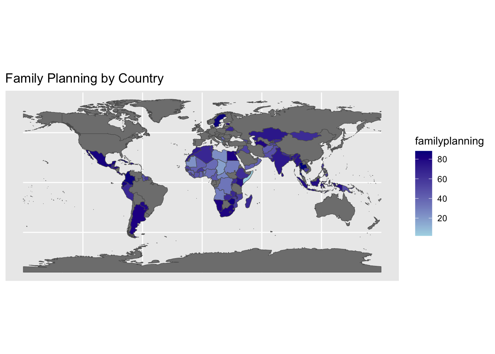
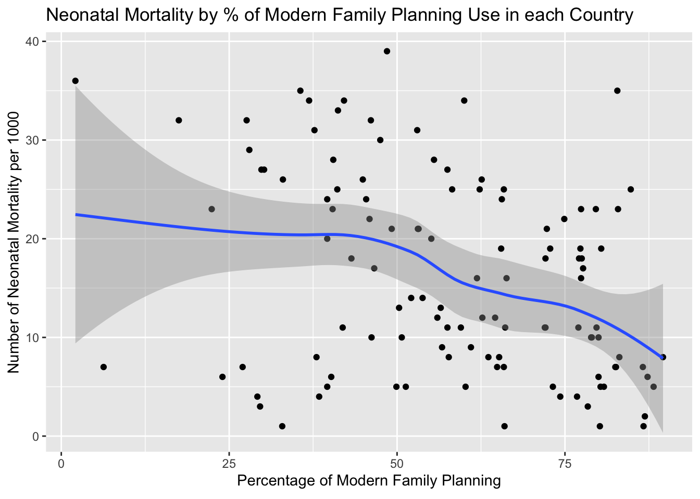
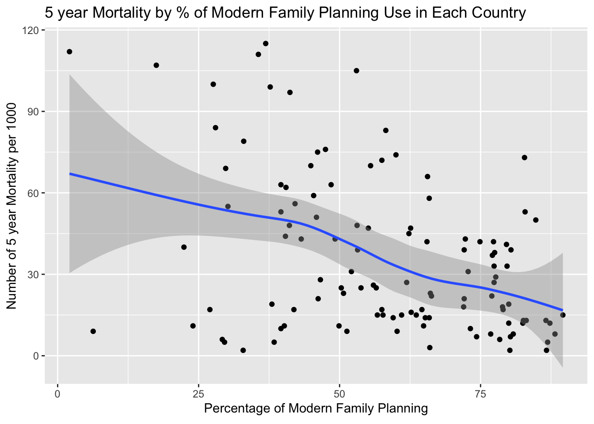

| variable | Mean | Median | SD | Min | Max |
|---|---|---|---|---|---|
| adolescentbirths10_14 | 1.54300 | 1.0 | 1.908633 | 0.0 | 10.7 |
| adolescentbirths15_19 | 61.63153 | 52.8 | 42.832929 | 2.4 | 184.4 |
| familyplanning | 58.14783 | 59.5 | 19.591640 | 2.1 | 89.6 |
| neonatalmortality | 16.14783 | 14.0 | 10.010734 | 1.0 | 39.0 |
| year5mortality | 36.26957 | 27.0 | 28.825951 | 2.0 | 115.0 |
PM566Final
Research Question: Do countries with higher percentage of females with their needs for family planning met with modern methods have lower neonatal mortality rates?
Introduction
The World Health Organization has made one of its sustainable development goals increasing the number of women who use modern family planning methods. Family planning methods are contraceptive methods that allow women to be sexually active without the worry of becoming pregnant. There are many reasons to increase the amount of women who use family planning including population control, increased maternal health, decreased number of unwanted children, and many more reasons. One reason that increasing family planning may be a positive thing is that it may allow the women to be better prepared for having a child and increase the amount of care the neonate can have access to.
This leads me to the question of whether countries with higher percentage of females with their needs for family planning met with modern methods have lower neonatal mortality rates. I will also be looking at whether family planning has an association with 5 year mortality as well as adolescent birth rates.
Methods
In order to answer the question posed above, data from the World Health Organization (WHO) was obtained. The WHO obtains yearly statistics by country to see how countries are working towards the sustainable development goals that the WHO has set. The data is collected and organized by the WHO and they release the comparable estimates of each country for each sustainable development goal. For this project, I looked at the data by country and obtained each countries proportion of women who have their need for family planning met. This is the independent variable for this project. As the primary outcome I obtained the number of neonatal mortality by country per 1000 neonates. For secondary outcomes I looked at the number of 5 year mortality per 1000 people by country, and the adolescent birth rate of both adolescents aged 10-14 and 15-19. I uploaded this data from the WHO and started by ensuring that there were no labels to interfere with the analysis within the data set and removed all of those. I ensured that each variable was coded as a numeric variable except for the countries variable which was coded as a character. As the primary and independent variables did not have data from certain countries, I eliminated those countries from the data set as they would add no value to the analysis. I did not eliminate countries with unavailable data for the secondary outcomes as this was less important and I did not want to skew the data of the main outcome. The percentage of countries with family planning is skewed to the right somewhat with a range of 2.1 to 89.6. There are no outliers. Neonatal mortality is slightly skewed to the left with no outliers and a range of 1 to 39. 5 year mortality is skewed to the left with 3 outliers and a range of 2 to 115. Adolescent birth of girls aged 15-19 is skewed to the left with 2 outliers and a range of 2.4 to 184.4. Adolescent birth of girls aged 10-14 is heavily skewed to the left with 6 outliers and a range from 0.0 to 10.7. For data exploration I used boxplots and summary statistics to view the data. To answer the main question I used correlation statistics, scatter plots with summary statistic lines, and also an interactive scatter plot.
Results
There is a moderate negative correlation between family planning and neonatal mortality. It has an R coefficient of -0.345. There is also a downward trend in the data when graphing it on a scatter plot by country. There is more of a change in effect of decreased neonatal mortality once over 50% of the population uses family planning methods. Before 50% there is a minimal effect of increasing modern family and the decrease in neonatal mortality. There is also a negative correlation between family planning and 5 year mortality. There is an R coefficient of -0.419. There is a steady downward trend between an increase in family planning and a decrease in 5 year mortality. There is very little negative correlation between family planning and adolescent birth rate of girls age 15-19. The R coefficient is -0.275. There is also a very small negative correlation between family planning and adolescent birth rate of girls age 10-14. The R coefficient is -0.284. For both adolescent birth rate of those ages 15-19 and 10-14 there does not seem to be a very strong downward trajectory of the smooth fit line in the scatter plot which makes it seem like there is not a large effect of family planning on adolescent mortality.
Table 1: This table summarizes the mean, median, standard deviation, minimum and maximum of the main variables we are looking at.

This density map shows the percentage of family planning throughout the world in places we have data from.
`geom_smooth()` using method = 'loess' and formula = 'y ~ x'
This plot graphs the number of neonatal mortality per 1000 neonates vs the percentage of modern family planning. The blue shows the best fit linear relationship between the variables and demonstrates that as the percentage of modern family planning increases, the number of neonatal mortality decreases overall. This is seen by the downward slope of the line.
This plot graphs the number of neonatal mortality per 1000 neonates vs the percentage of modern family planning. However, different from the previous graph, when you hover over a point you can find out what country that point represents.
`geom_smooth()` using method = 'loess' and formula = 'y ~ x'
This plot demonstrates the number of 5 year mortality per 1000 people vs the percentage of modern family planning. The blue line through the middle demonstrates that there is a decreasing slope so as the percentage of family planning increases, the number of 5 year mortality decreases.
This plot demonstrates the number of 5 year mortality per 1000 people vs the percentage of modern family planning. However, different from the previous graph, when you hover over a point you can find out what country that point represents.
Conclusion
There seems to be an association between increased family planning and decreased neonatal mortality. This may be the case because more people are able to choose when they want to have a baby and can be better prepared for taking care of that baby when it is born when there is more family planning. Another possible reason this could be true is because when there is increased family planning, women are more capable of planning when they want to have a baby and they can choose a time when they are better able to get prenatal care to ensure the health of the baby. There also seems to be an association between increased family planning and 5 year mortality. Most likely the same reasons apply to why this trend exists. One thing that was interesting was there did not seem to be a strong association between adolescent birth rate of girls age both 15-19 and 10-14 and family planning. This may be the case because family planning methods are probably not marketed to adolescents at the same level they are to adults. This can cause those who become sexually active earlier in life to potentially be more likely to not use family planning methods. It would be interesting to see the use of family planning methods based on age and see if most adolescents regardless of country do not use family planning methods which would explain the lack of association. One potential limitation of this study is that there might have been several countries that we eliminated that had no neonatal mortality data and family planning data. These countries could have strengthened our association because the countries which do not have the capabilities of gathering this data may more likely be from a lower income country and their access to family planning and health care is limited. Therefore, it might be likely that they had low rates of family planning and higher rates of neonatal mortality.